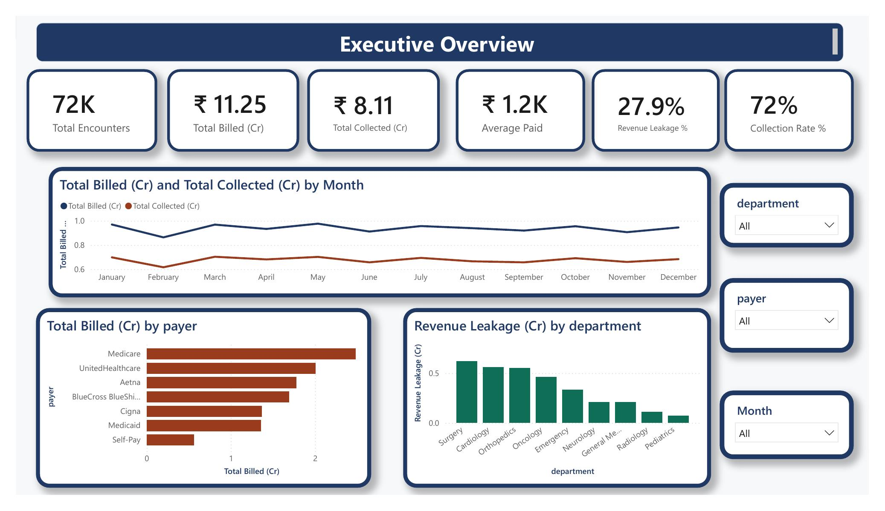
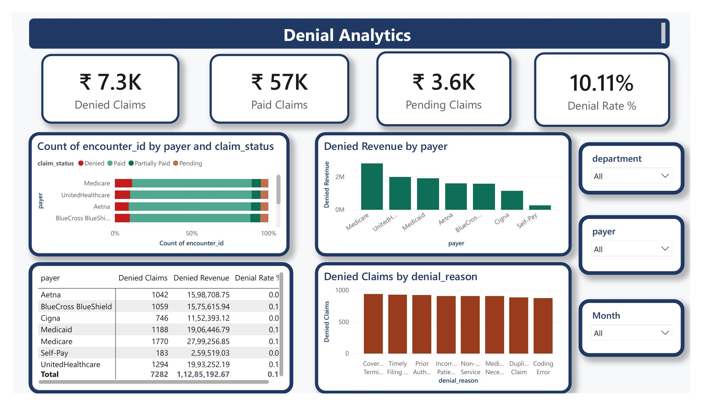
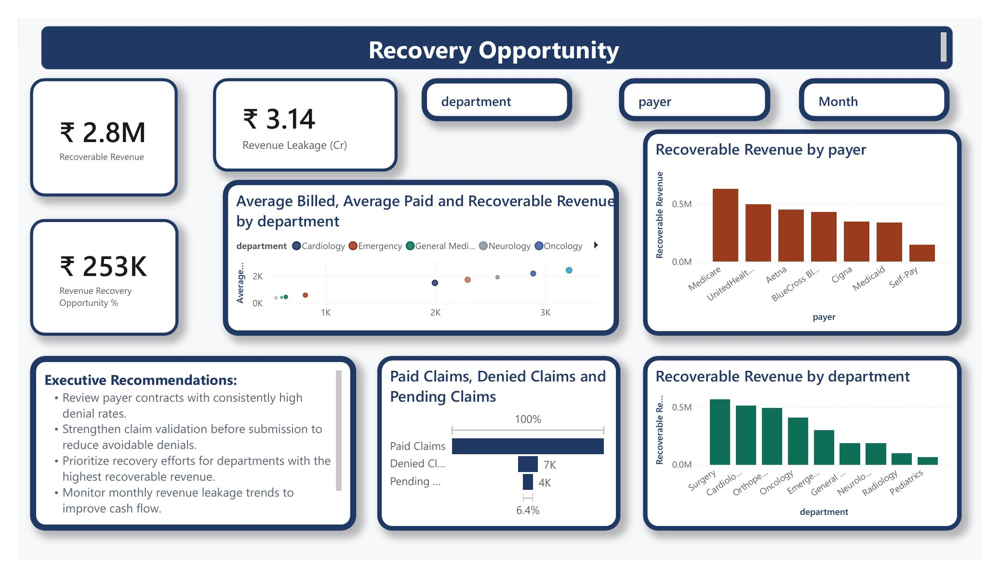

A 2-page Power BI report built on the same 72,000-encounter dataset, with DAX measures for revenue leakage, denial rate, and a benchmark-based recovery opportunity calculation. The full .pbix file is in the GitHub repo.



Executive recommendations generated directly on this page: review payer contracts with high denial rates, strengthen claim validation before submission, prioritize recovery by department, and monitor monthly leakage trends.
Revenue Leakage % =
DIVIDE([Total Billed (Cr)] - [Total Collected (Cr)], [Total Billed (Cr)])
Denial Rate % =
DIVIDE(
CALCULATE(COUNTROWS(encounters), encounters[claim_status] = "Denied"),
COUNTROWS(encounters)
)
Best Payer Denial Rate % =
CALCULATE(
MINX(
VALUES(encounters[payer]),
CALCULATE(
DIVIDE(
CALCULATE(COUNTROWS(encounters), encounters[claim_status]="Denied"),
CALCULATE(COUNTROWS(encounters))
)
)
),
ALL(encounters[payer])
)
Recoverable Revenue (Cr) =
VAR PayerDenialRate = [Denial Rate %]
VAR BestRate = [Best Payer Denial Rate %]
VAR Gap = MAX(PayerDenialRate - BestRate, 0)
RETURN
DIVIDE(Gap * SUM(encounters[billed_amount]), 10000000)